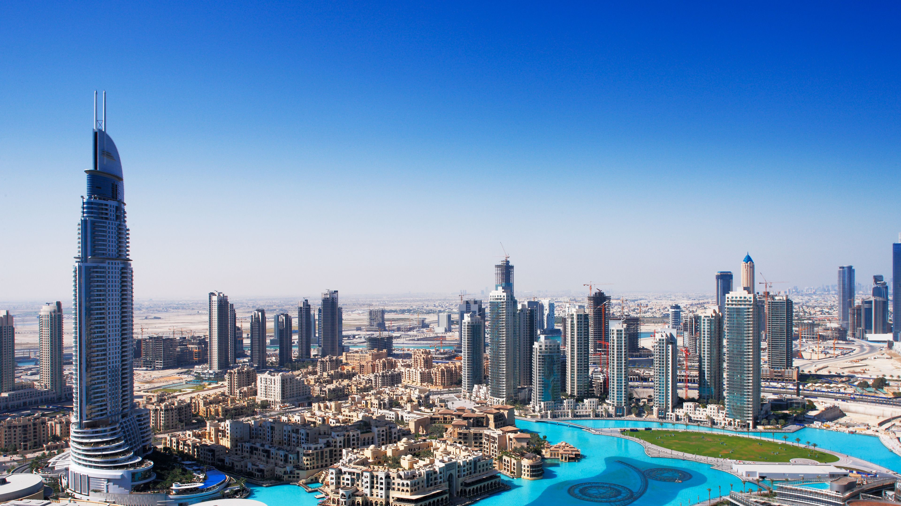

Dubaï ou DoubaïNote 1 (en arabe : دبي / Dubayy, /dʊ.ˈbajj/) est la première ville des Émirats arabes unis (devant la capitale fédérale Abou Dabi). Située sur le golfe Persique, elle est capitale de l'émirat de Dubaï, et compte plus de trois millions d'habitants. Elle forme, avec les villes de Charjah, Ajman et Oumm al Qaïwaïn, elles-mêmes capitales de leurs émirats respectifs, une agglomération qui dépasse 3,5 millions d'habitants en 2022. Dubaï est également le premier port du pays.Quoique n'étant pas la capitale des Émirats arabes unis, Dubaï est devenue la ville la plus connue de la fédération. Cette renommée est due notamment à la médiatisation de ses projets touristiques comme l'hôtel Burj-al-Arab, l'hôtel le plus luxueux de Dubaï, au gigantisme de ses projets immobiliers comme les Palm Islands, presqu'île et archipel artificiels en forme de palmier, The World, archipel artificiel qui reproduit la carte du monde, la Dubaï Marina à l'architecture particulière et gigantesque, ou encore l'immeuble le plus haut du monde, la Burj Khalifa. Ces projets, revendiqués par le gouvernement, sont présentés comme étant un moyen de devenir d'ici quelques années[Depuis quand ?] la première destination mondiale du tourisme de luxe et de devenir l'un des pôles mondiaux du tourisme familial, d'affaires, commercial, etc.

Dubaï se trouve à 130 km au nord-est d'Abou Dabi, la capitale de l'union, à 362 km à l'ouest-nord-ouest de Mascate et à 60 km environ de la frontière avec l'Oman, à 864 km à l'est de Riyad et à 1 226 km au sud-sud-est de Téhéran. La ville fut créée dans une boucle du bras de mer, le Khor Dubaï, qui s'insinue dans le désert et qui constitue un port naturel. Le centre de la ville, qui garde un caractère arabe, est constitué de petits immeubles et de ruelles étroites. Les nouveaux quartiers s'étalent quant à eux dans le désert et le long de la côte ouest en direction du sud et représentent une vaste agglomération avec Ali, Umm Suqueim (ou Umm Suqeim (en)), Barsha, Jumeirah, Bur Dubaï et Deira.La ville de Dubaï connaît une importante expansion démographique depuis quelques années : la population était de 265 702 habitants en 1980, 669 181 en 1995, un million en 2004, 1 700 234 en 2006 et près de 2,2 millions en 2011 (en 2010, la ville recevait 10 000 nouveaux habitants par mois). En 2018, le centre des statistiques de Dubaï déclarait 2 998 326 habitants13, ce qui en fait la ville la plus peuplée des Émirats arabes unis.Cependant, les chiffres sont encore plus élevés si on compte l'ensemble de la conurbation de Dubaï, qui comprend également Charjah et Ajman (elles-mêmes capitales de leurs émirats respectifs) : sur cette base, on peut compter 2,7 millions d'habitants en 200714.